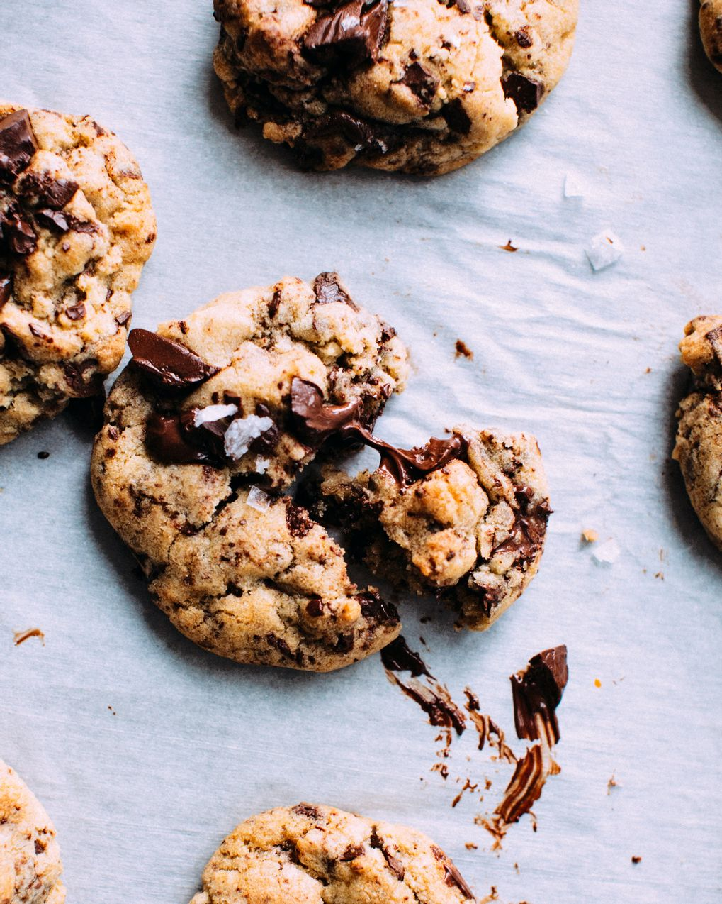
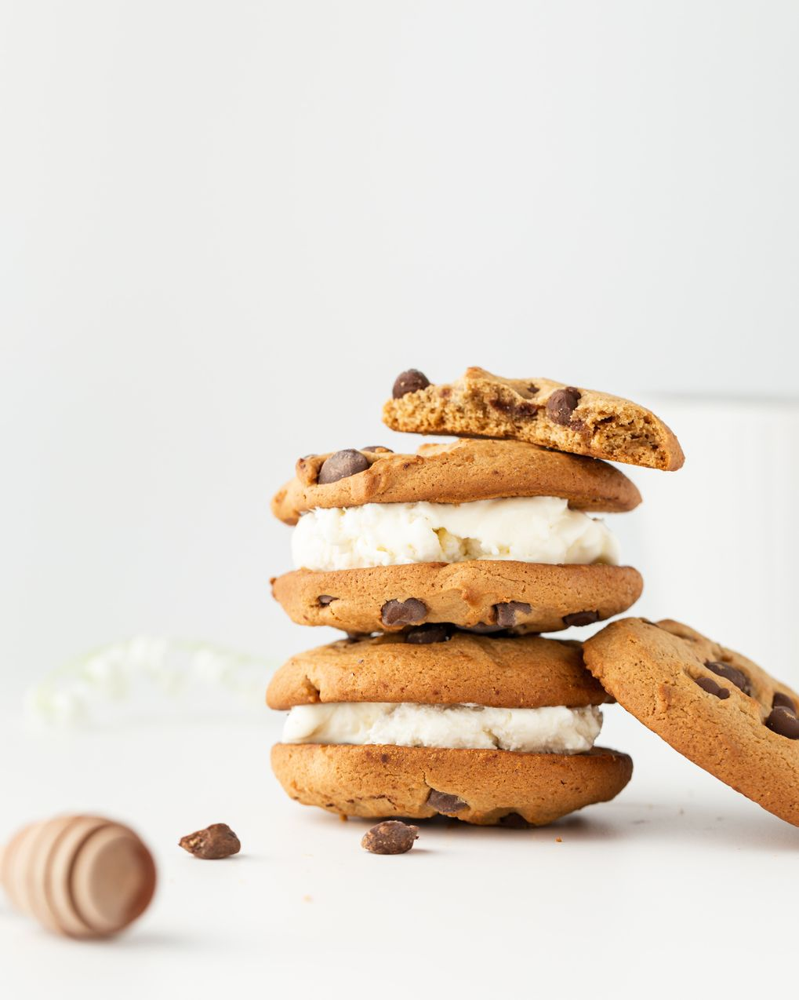
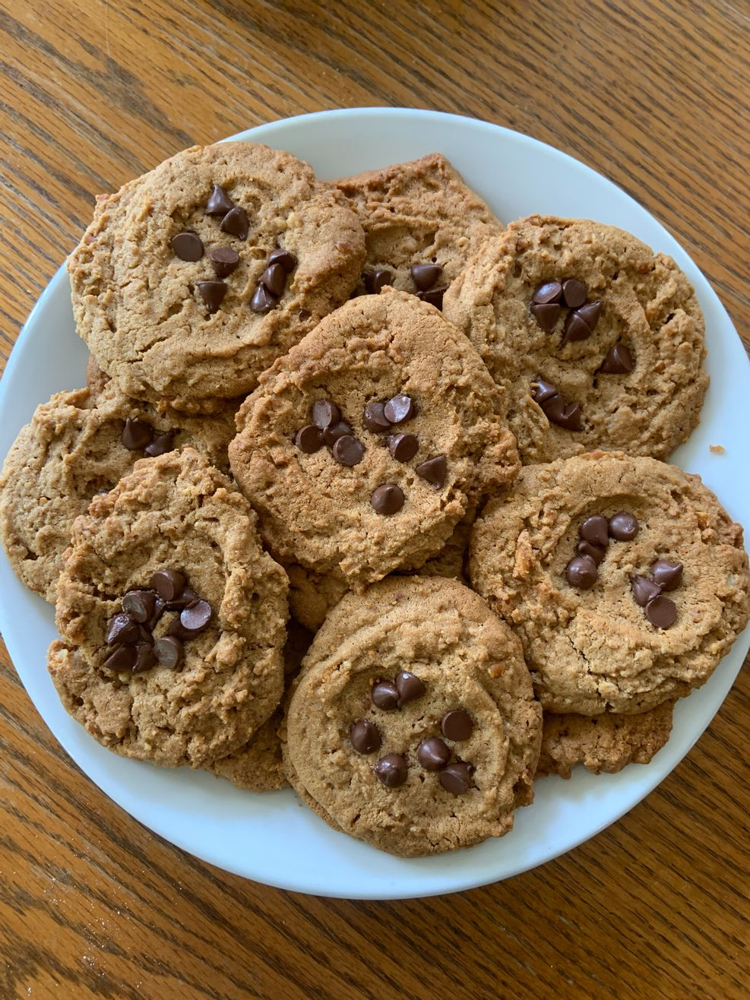
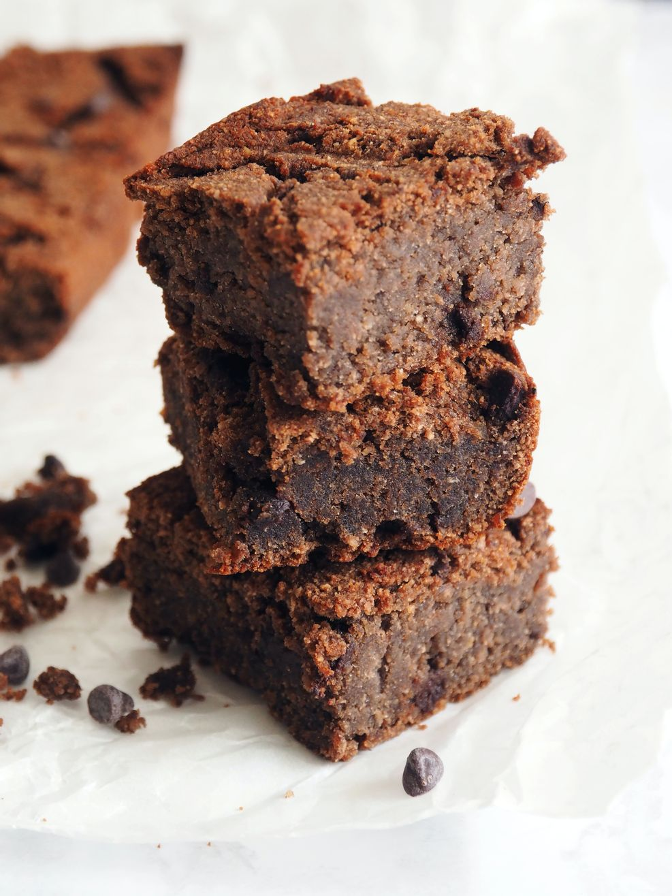
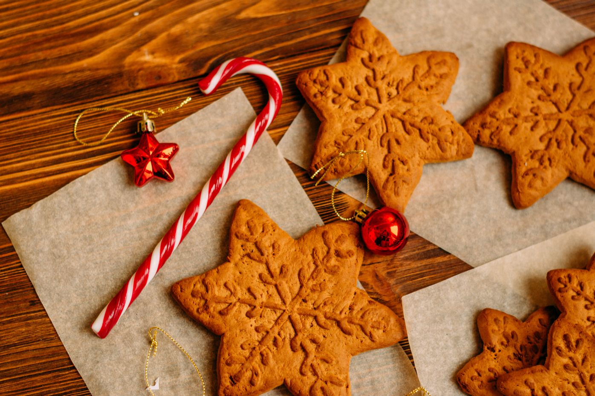
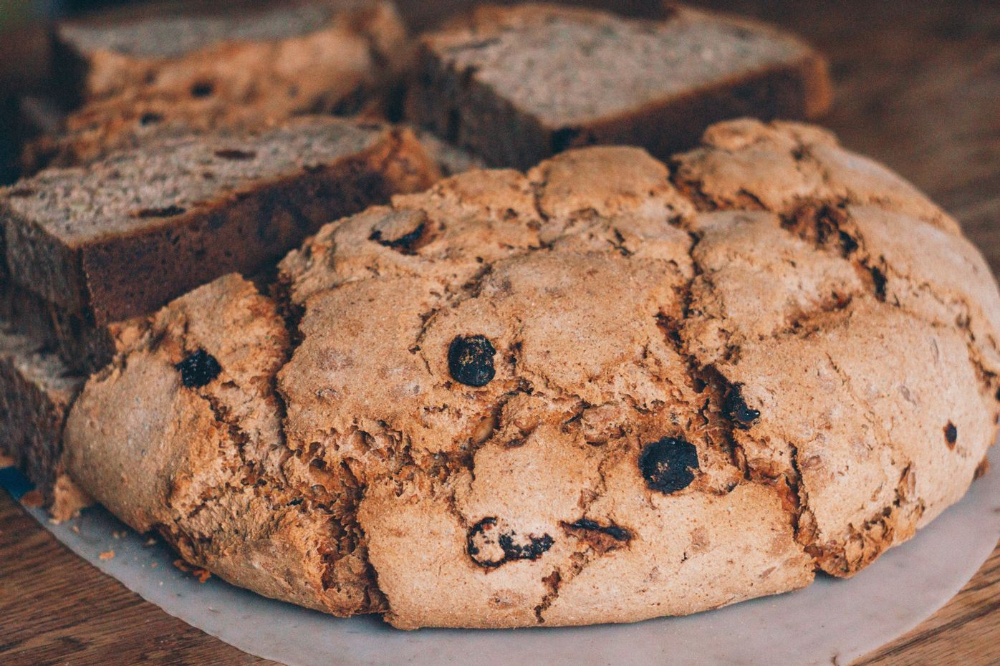
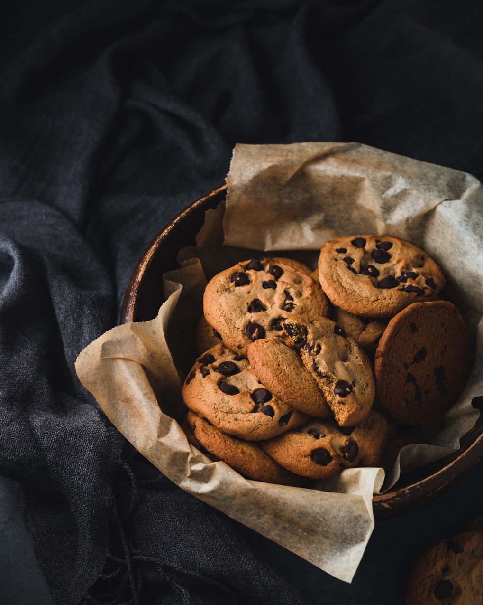

Oatmeal Raisin Cookies
A seriously underrated cookie, oatmeal raisin is another type of drop cookie. Its dough is oatmeal based and contains raisins and brown sugar. They're warm and comforting — a reminder of simpler times and grandma's house.

Whoopie Pies
These sandwich-style cookies are made with two soft, pillowy cookies and a marshmallow filling. onsidered a Pennsylvania Amish tradition. Today they are very popular in USA, where whoopie pies were first sold.

Molasses Cookies
An offshoot of the popular holiday gingerbread cookies, molasses cookies are made with just as much ginger. They can come in either a soft, cake form or a chewier crinkle form (perfect for gifting).

Biscotti
The origin of the word biscotti literally means "twice-cooked/baked" as biscotti is twice baked, resulting in its hard texture and long shelf life. It traces all the way back to ancient Rome.
Our Menu
Take a look at our menu and choose your meal or order it right from our bakery
Whoopie Pies..............$22.80
These sandwich-style cookies are made with two soft, pillowy cookies and a marshmallow filling
Molasses Cookies...........$21.70
An offshoot of the popular holiday gingerbread cookies, molasses cookies are made with just as much ginger.
Chia Rye.........$28.80
Light rye cookie covered with chia seeds and sunflower seeds.
Biscotti........$19.60
The origin of the word biscotti literally means "twice-cooked/baked" as biscotti is twice baked.
Oatmeal Raisin Cookies.......$25.80
Its dough is oatmeal based and contains raisins and brown sugar.
Shortbread Cookies........$30.80
Shortbread cookies have a very high ratio of butter or shortening to flour, hence the name "short."
About Us
SUNSHINE Bakery proudly specializes in a uniquely handcrafted cookies that is equal parts healthy and organic. Our cookies is made of premium ingredients and fresh seasonal flavors packed with: spinach, carrots, berries, seeds, nuts, and other healthy goods. SUNSHINE Bakery products are rich in protein, oils, nuts, and fibers that will keep you satisfied, healthy, and happy throughout the day.



READ MORE ABOUT US
We believe that cookies, especially handmade and healthy cookies, deserves great respect. Respect for the land, for our local farmers who raise and gather in the crops, and for bakers who bake cookies by hand for us to enjoy at the table every day. From land to a table, cookies is a symbol of our life cycle. We are passionate about creating nutritious and healthy cookies to support your healthy lifestyle.